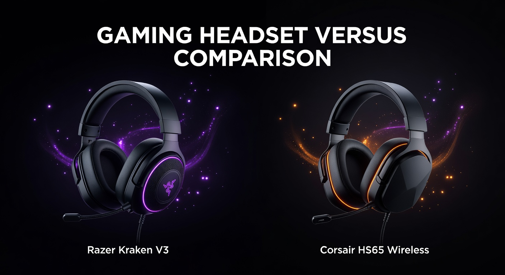

Razer Kraken V3 vs Corsair HS65 Wireless
Same $99.99 price. Completely different trade-offs. One brings THX Spatial Audio and a pro-grade mic. The other cuts the cord entirely.

Razer Kraken V3
THX Spatial Audio, titanium drivers, noise-canceling mic. The wired precision choice for FPS players who want every audio edge.
Corsair HS65 Wireless
2.4GHz wireless, Bluetooth 5.2, 24-hour battery, 40g lighter. The cable-free choice for multi-device gamers who refuse to be tethered.
Full Spec Comparison
| Spec | Razer Kraken V3 | Corsair HS65 Wireless |
|---|---|---|
| Price | ~$99.99 | ~$99.99 |
| Drivers | 50mm TriForce Titanium | 50mm Neodymium |
| Frequency Response | 20–20,000 Hz | 20–20,000 Hz |
| Impedance | 32Ω | 32Ω |
| Weight | 322g | 282g |
| Connection | Wired USB-A (1.3m) | 2.4GHz wireless + BT 5.2 + USB-C |
| Battery Life | N/A (wired) | 24 hours |
| Spatial Audio | THX Spatial Audio | None |
| Microphone | Detachable HyperClear Cardioid (NC) | Flip-to-mute omni (noise-reducing) |
| Mic Frequency | 100–10,000 Hz | Not specified |
| Platform | PC, PS4/5, Xbox, Switch (docked), Mobile | PC, PS4/5, Mobile (BT); Xbox wired only |
| Amazon ASIN | B09G9BQLGD | B0BF4JWK2T |
Category Breakdown
🔊 Audio Quality
Both headsets use 50mm drivers and cover the same 20–20,000 Hz frequency range, so raw driver specs are a wash. The real gap is THX Spatial Audio. The Kraken V3's TriForce Titanium drivers — split into three zones for highs, mids, and bass — paired with THX processing give you genuine positional audio in supported titles. Footsteps, reloads, and directional sound are noticeably more precise. The HS65 Wireless delivers balanced, pleasant audio, but there's no spatial processing at this price — what you hear is what you get.
📡 Connectivity
This is the HS65's defining advantage. At $99.99, getting both 2.4GHz low-latency wireless and Bluetooth 5.2 in the same headset is exceptional — most headsets charging this price are either wired or wireless, not both. The 2.4GHz connection keeps latency at sub-10ms for gaming; Bluetooth handles your phone or tablet on the side. The Kraken V3 is strictly USB-A wired. Reliable and zero-latency by definition, but you're always tethered. If you sit in a fixed gaming station, the wire rarely matters. If you move around or switch between your PC and phone, the HS65's flexibility is a significant quality-of-life win.
🎙️ Microphone
Clear separation here. The Kraken V3's detachable HyperClear Cardioid mic with active noise cancellation produces notably cleaner voice clarity than the HS65's omnidirectional flip-to-mute mic. Cardioid pattern means it picks up your voice and rejects background noise (keyboard clatter, fans, pets). The HS65 mic is functional — teammates will hear you fine — but it captures more ambient sound and sounds less polished on voice recordings. If streaming, Discord quality, or crystal-clear comms in ranked play matter, Razer wins this easily.
😌 Comfort & Build
The HS65 is 40g lighter (282g vs 322g). That gap is noticeable in a 4-hour session — the HS65 puts less pressure on your neck and temples. Both headsets use memory foam ear cushions and have padded headbands, so contact-point comfort is comparable. The Kraken V3's ear cups are slightly deeper, which suits those with larger ears. The Kraken's build feels solid plastic with some flex; the HS65 has a similar construction that Corsair has refined through multiple generations. Both will survive normal use without issue. Neither is a metal-frame premium headset.
🕹️ Platform Compatibility
The Kraken V3's USB-A connection means plug-and-play on PC, PS4/5, Xbox One/Series, Switch (docked), and mobile via adapter — broad coverage. The HS65 Wireless covers PC, PS4/5, and mobile via Bluetooth, but Xbox support is wired only (the 2.4GHz dongle isn't licensed for Xbox). For PlayStation-primary gamers, both work perfectly. For Xbox gamers who want wireless, the HS65's wireless mode won't work — the Kraken V3's wired USB is the better option on Xbox.
💰 Value
At the exact same MSRP, the value question comes down entirely to what you're optimizing for. The Kraken V3 gives you more for your audio dollar — titanium drivers, THX processing, better mic. The HS65 Wireless gives you more for your convenience dollar — wireless freedom, Bluetooth, lighter weight, battery life. Neither is a bad value. Both are arguably the best at what they focus on within this price band.
4 Key Differences
- Wired vs Wireless: The single biggest decision. Kraken V3 = USB-A cable always attached. HS65 Wireless = cable-free via 2.4GHz with Bluetooth as a bonus. At the same price, this is a pure lifestyle preference.
- THX Spatial Audio vs None: Kraken V3's positional audio processing is a legitimate competitive advantage in FPS games. The HS65 has no equivalent — its stereo soundstage is good but not directionally processed.
- Microphone Quality: HyperClear Cardioid (Kraken V3) vs omni flip-to-mute (HS65). If voice quality matters for comms or streaming, Razer's mic is substantially better.
- Weight: HS65 at 282g vs Kraken V3 at 322g. The 40g difference is meaningful in marathon sessions and makes the HS65 feel more refined on your head.
Frequently Asked Questions
Is the Corsair HS65 Wireless good enough for competitive gaming?
Yes, with a caveat. The 2.4GHz connection is low-latency enough for competitive play — you won't notice input lag from the wireless connection. The trade-off is spatial audio: the HS65 lacks THX or Dolby Atmos processing, so directional sound isn't as precise as the Kraken V3 in supported titles. For casual to semi-competitive play, it's excellent. For ranked FPS where every audio cue matters, the Kraken V3 has an edge.
Does the Razer Kraken V3 have RGB?
Yes, the standard Kraken V3 includes Razer Chroma RGB lighting around the ear cups. It's connected and configured via Razer Synapse software on PC.
Can the Corsair HS65 Wireless connect to Xbox wirelessly?
No. The 2.4GHz USB dongle is not licensed for Xbox wireless connectivity. On Xbox, the HS65 can only be used wired via the USB-C cable. The Razer Kraken V3 (USB-A wired) works natively on Xbox without issues.
How does the Corsair HS65 Wireless battery actually hold up?
Corsair rates it at 24 hours via 2.4GHz. Real-world usage typically lands in the 18–22 hour range depending on volume levels and whether you're using any EQ processing. That's still exceptional for a sub-$100 wireless headset — you'll likely charge it once every few days rather than every night.
Which headset is better for streaming or content creation?
Razer Kraken V3 by a significant margin. The detachable HyperClear Cardioid mic with noise cancellation produces cleaner, more professional-sounding audio than the HS65's basic flip mic. For streaming where mic quality is visible to your audience, Razer is the stronger choice at this price point.
Are there wireless versions of the Razer Kraken V3?
Yes — the Razer Kraken V3 HyperSpeed adds 2.4GHz wireless but removes THX Spatial Audio, while the Kraken V3 Pro adds wireless and keeps more features at a higher price (~$130–$150). If you want wireless with Razer's sound quality, expect to pay more than the base $99.99 Kraken V3 wired.